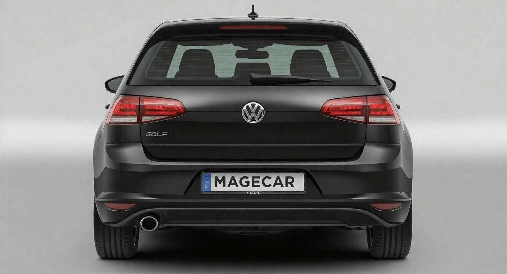
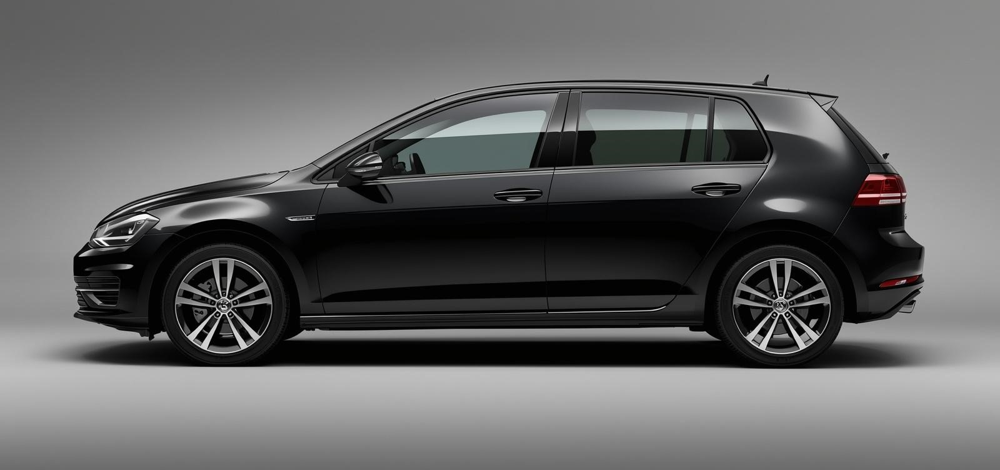
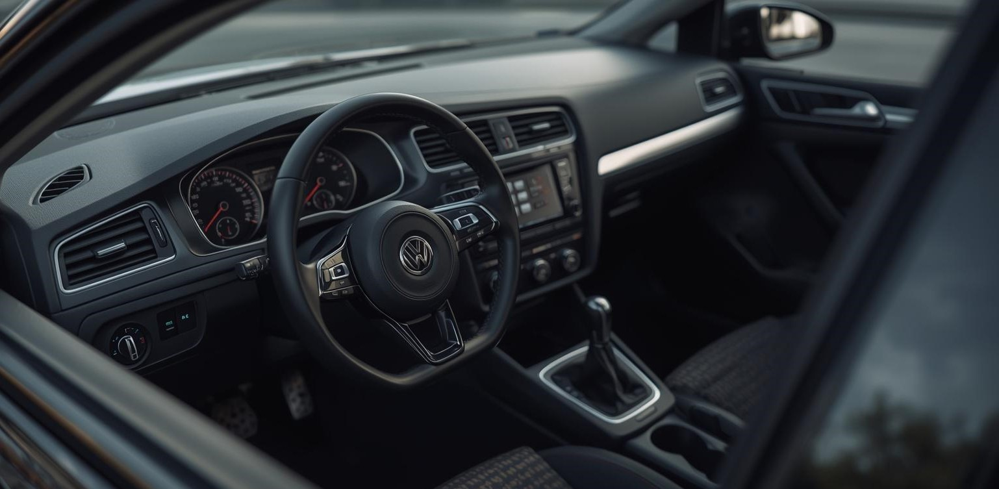

Volkswagen Golf 5 1.9 TDI
1 899 999 Ft
Éevjárat
2009/4
Km. óra állás
182 435 Km
Üzemanyag
Dízel
Teljesítmény
77kW, 105LE
Állapot
Megkímélt
Csomagtartó
500 liter
A Volkswagen Golf Mk5 1.9 TDI az egyik legismertebb és legnépszerűbb dízel kompakt autó a maga kategóriájában. A modell a Volkswagen híres Golf-sorozatának ötödik generációjához tartozik, amely a megbízhatóságáról, időtálló kialakításáról és praktikumáról vált ismertté. A 1.9 literes TDI dízelmotor igazi klasszikusnak számít: strapabíró felépítésének és egyszerűbb technikájának köszönhetően hosszú élettartamra képes, megfelelő karbantartás mellett akár több százezer kilométert is gond nélkül teljesít. A motor erőssége nem a sportos teljesítmény, hanem az alacsony fogyasztás és a jó nyomaték, ami különösen városi forgalomban és hosszabb utak során is kényelmes használatot biztosít. A Golf 5 futóműve stabil és kiegyensúlyozott, ami biztonságos vezetési élményt nyújt, még rosszabb útviszonyok között is. A kormányzás pontos, az autó jól irányítható, így kezdő és tapasztalt vezetők számára egyaránt ideális választás lehet. A beltér ergonomikus, a kezelőszervek logikusan elhelyezettek, az ülések pedig hosszabb utakon is kényelmesek. Tágas utastere és praktikus csomagtere miatt családi autónak is alkalmas, miközben kompakt méreteinek köszönhetően könnyen manőverezhető városi környezetben. Fenntartási költségei általában kedvezőek, az alkatrészek jól elérhetők, és a típus széles körben ismert a szerelők körében is. Összességében a Golf 5 1.9 TDI egy kiváló ár-érték arányú autó, amely a gazdaságosságot, megbízhatóságot és mindennapi használhatóságot helyezi előtérbe, így remek választás lehet azoknak, akik egy tartós és takarékos járművet keresnek.